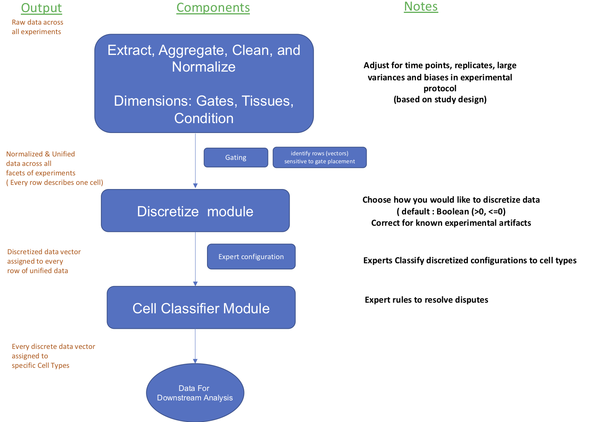
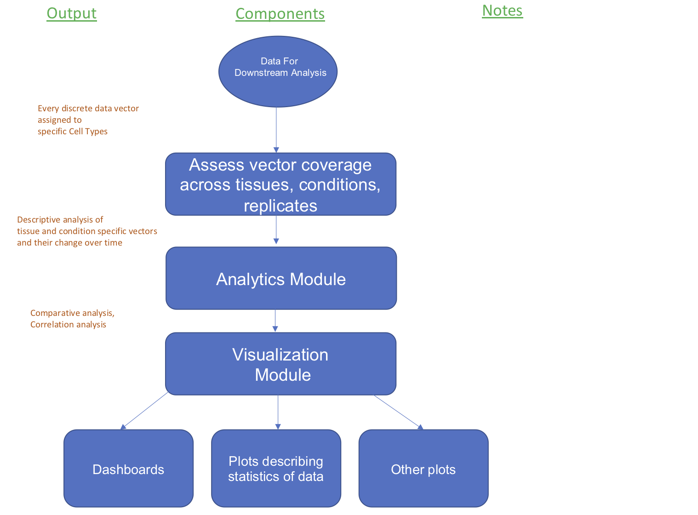

The SYLARAS technology is comprised of three components. The first is a 12-color flow cytometry antibody panel optimized for coarse-grained immunophenotyping of mouse immune cells. The second is a an experimental protocol detailing a method for tissue collection, processing, and high-throughput immunophenotyping by flow cytometry. The third component is a a computational algorithm written in the Python programming language and run at the command-line of a personal computer that transforms quantitative single-cell data (no matter the method of its acquisition) into a set of data-rich graphical dashboards (1 per cell type). A set of SYLARAS dashboards together serve as a visual compendium of the time and tissue-dependent changes occurring in systemic cellular immune architecture in response to immune perturbation.
The SYLARAS algorithm is a copyrighted, open-source software intended for non-profit academic use.
Contemporary instruments and reagents for single-cell measurement permit the rapid acquisition of experimental datasets pertinent to the study of immune system structure and function. However, the comprehensive cell subset identification, rigorous statistical analysis, and concise graphical display required to analyze and interpret bulky single-cell datasets prohibits their exploration with conventional tools that require the development of serial gating strategies and which become cumbersome and error-prone when applied to increasingly large datasets. SYLARAS uses computation to overcome these challenges by streamlining the process of cell subset ID, fully automating user-defined statistical tests comparing experimental and control cohorts, and formatting the results as a set of graphical dashboards on cell subsets of interest.
Overall Principle
Mitogenic and antigenic stimuli lead to immune cell proliferation, migration, and differentiation which alter the cellular architecture of lymphoid tissue. Although the molecular mechanisms underlying changes in a lymphoid tissue's cellular architecture are not always clear, the changes themselves are readily detected by immunophenotyping: a technique for delineating the proportions of diverse cell types based on their differential antigen expression. The ability of SYLARAS to quantify alterations in lymphoid tissue composition makes it possible to infer cell-based mechanisms of disease and therapeutic response through inductive scientific inference.
Cell Subset Identification
When immunoreactivity is reported in binary terms (e.g. CDa+, CDb-, CDc+), the number of possible immunophenotypes specified by M antibodies is 2M. This exponential relationship makes comprehensive cell subset identification in multiplex datasets prohibitively intensive and error prone through serial gating approaches. SYLARAS avoids the complexity and inherent non-commutativities of serial gating by considering a cells' immunoreactivity on a channel-by-channel basis, by curating a set of unidimensional gates applied to its marginal signal intensity distributions.

In this procedure, the interface between background and foreground signal is defined per sample and immunomarker channel through the manual curation of histogram gates. To aid in objective gate placement, the signal intensity distribution of unlabeled splenocytes is super-imposed on the immunolabeled distribution to reveal how experimental background (autofluorescence and/or off-target antibody binding) compares with experimental data ( panel a ). Distributions are then zero-centered at the curated gate through programmatic subtraction of the gate value from all signal intensity values. Signal intensities falling to the lefthand side of the gate (deemed to be experimental noise) now become negative valued, allowing each cell in the dataset to be assigned an M-dimensional Boolean vector that specifies its immunophenotype following a binarization procedure according to the mathematical sign (+/-) ( panel b ). For example, a cell assigned the Boolean vector [1, 0, 1, 1, 0, 0, 0, 1, 1 ,0, 0] indicates that its signal intensity in cytometer detection channel A fall to the right-hand side of the gate, while its signal intensity in channel B fall to the left-hand side of the gate, etc. The cell would therefore be associated with the immunophenotype: CDA+CDB-CDC+CDD+CDE-CDF-CDG-CDH+CDI+CDJ-CDK-. CDa+, CDb-+, CDc+, CDd+, CDe-, CDf-, CDg-, CDh+, CDi+, CDj-, CDk-. In the case of 3 antibodies, the vectorization procedure is geometrically conceptualized as the binning of cells across the 23 octants of a 3-dimensional cube ( panel c ). In the case of an arbitrary number of antibodies, the vectorization is conceived as the binning of cells across the 2M orthants of an M-dimensional hypercube.

(1) An immune perturbagen (orthotopically engrafted mouse glioblastoma cells in this case) or control agent are administered to age-matched cohorts of experimental and control mice. (2) Lymphoid tissues are harvested at predetermined time points. (3) Tissues are processed into single-cell suspensions and plated in a 96 well V-bottom plate. (4) Cells are immunolabeled with a 12-color flow cytometry antibody panel optimized and validated for coarse-grained immunophenotyping of mouse immune cells (11 antibodies plus fixable viability dye). (5) Single-cell data are acquired by high-throughput flow cytometry. (6) Raw data files are spectrally deconvolved and gated for viable singlets. (7) Cleaned data undergo a computer-assisted histogram gating procedure (see the "Theory" tab above for details) prior to computational data analysis with the SYLARAS algorithm. Click here to download our experimental protocol.
Description of the computational workflow
 
SYLARAS allows multi-organ immunophenotyping data on perturbagen-induced changes in time and tissue-specific cell frequency to be portrayed in a readily interpretable format through information-dense graphical dashboards (1 per cell type). The example shown here was programmatically generated during a screen of the response of 5 peripheral lymphoid tissues of C57BL/6 mice to the syngeneic GL261 glioblastoma model. (1) alias (2) expressed immunomarkers (3) lineage (4) forward and side scatter distributions (5) Logicle-transformed signal intensity distributions of 11 immunomarkers (6 and 7) Tissue and time point-specific average percent difference (left) and log2 fold-change (right) between GBM-burdened and control mice (n=8 mice/group/tissue/time point). Icons indicate under what conditions and to what extent statistical significance was achieved. (8) Tissue distribution across 5 lymphoid organs color-coded as in number 6, (9) Percentage of the full dataset accounted for by the cell type (10) Replicate data across the study’s 48 mice showing the percentage of each tissue accounted for by the cell type.
The SYLARAS algorithm is a copyrighted, open-source software intended for non-profit academic use.
GNU GENERAL PUBLIC LICENSE
This program is free software: you can redistribute it and/or modify it under the terms of the GNU General Public License as published by the Free Software Foundation, either version 3 of the License, or (at your option) any later version.
This program is distributed in the hope that it will be useful, but WITHOUT ANY WARRANTY; without even the implied warranty of MERCHANTABILITY or FITNESS FOR A PARTICULAR PURPOSE. See the GNU General Public License for more details.
You should have received a copy of the GNU General Public License
along with this program. If not, see
Publications
(1) Baker et al. BioRxiv (2019) doi: https://doi.org/10.1101/555854, Systemic Lymphoid Architecture Response Assessment (SYLARAS): An approach to multi-organ, discovery-based immunophenotyping implicates a role for CD45R/B220+ CD8T cells in glioblastoma immunology. Click here to read the SYLARAS manuscript.
(2) Gregory J. Baker, Sucheendra K. Palaniappan, Stephanie H. Davis, Jodene K. Moore and Peter K. Sorger. Systemic lymphoid architecture response assessment (SYLARAS): Application to system-wide immunophenotyping of glioblastoma; Cancer Res July 2018 (78) (13 Supplement) 5670; DOI: 10.1158/1538-7445.AM2018-5670
(3) Gregory J. Baker, P.S. Thiagarajan, Sucheendra K. Palaniappan, Stephanie H. Davis, Jodene K. Moore and Peter K. Sorger. A flow-based immunoprofiling strategy for interrogating system-wide leukocyte composition in response to glioblastoma; Cancer Res July 1 2017 (77) (13 Supplement) 1678; DOI: 10.1158/1538-7445.AM2017-1678
Funding
Funding for the SYLARAS project was made possible by an American Cancer Society Postdoctoral Fellowship (PF-16-197-01-LIB) awarded to Gregory J. Baker, and both a National Institutes of Health P50 grant (GM107618) and National Cancer Institute U54 multicenter grant (CA225088) awarded to Peter K. Sorger.
Citation
Cite the SYLARAS approach to discovery-based immunophenotyping and the use of its resources as: Baker et al. BioRxiv (2019) doi: https://doi.org/10.1101/555854, Systemic Lymphoid Architecture Response Assessment (SYLARAS): An approach to multi-organ, discovery-based immunophenotyping implicates a role for CD45R/B220+ CD8T cells in glioblastoma immunology.
Contact Us
Copyright © All rights reserved | This template is made with by Colorlib